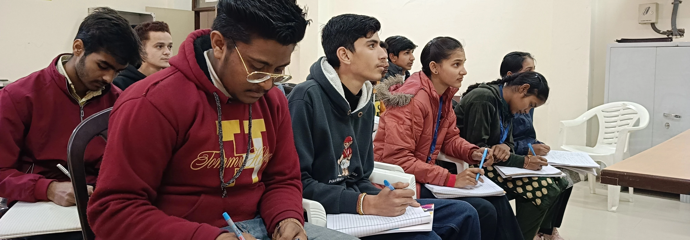

Applied Science
Applied science is a discipline of science that applies scientific knowledge to develop more practical applications, including inventions and other technological advancements.
.webp)
Applied Science in a Nutshell
- Integration of various scientific disciplines: Applied Science employs knowledge from diverse fields to address real-world problems, offering holistic solutions.
- Emphasis on real-world implementation: Applied Science focuses on translating theoretical concepts into practical solutions, driving technological advancements and innovations.
- Targeted problem identification and resolution: Applied Science thrives on identifying specific challenges and developing tailored strategies, showcasing its problem-solving orientation.
- Alignment with industrial needs: Applied Science caters to the demands of industries, ensuring its findings and innovations have direct applications and contribute to economic development.
- Continuous evolution and adaptability: Applied Science embraces innovation, constantly evolving to meet the dynamic demands of society, technology, and the environment.
Our Labs
Physics and Chemistry Lab
At our college's physics and chemistry labs, students collaborate in cutting-edge
research projects, utilizing state-of-the-art equipment to delve into the realms of
quantum mechanics and advanced chemical synthesis, fostering a passion for discovery and
innovation.
English Communication Lab
In the English Communication Lab at our college, students refine their language
proficiency through interactive sessions, enhancing both spoken and written
communication skills crucial for effective academic and professional engagement.
